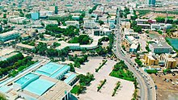

Economy of Djibouti
|  A view of Djibouti's central district | |
| Currency | Djiboutian franc (DJF) |
|---|---|
| U.S. dollar = 177.721 DJF | |
| Calendar year | |
Trade organisations | AL, AU, CEN-SAD, IGAD |
| Statistics | |
| GDP | |
GDP growth |
|
GDP per capita | |
GDP by sector |
|
| 0.148% (2018)[1] | |
Population below poverty line | 23% |
Labour force | 294,600 (2012 est.) |
Labour force by occupation |
|
| Unemployment | 40% (2017 est.) |
Main industries | Dairy, Fishing, Salt, Construction, Mining |
| External | |
| Exports | $155.5 million (2017 est.) |
Export goods | Reexports, Hides and skins, Coffee, Scrap metal |
Main export partners | |
| Imports | $1.172 billion (2017 est.) |
Import goods | Machinery and Equipment, Foodstuffs, Beverages, Chemicals, Petroleum products, Consumer Goods |
Main import partners | |
| Public finances | |
| 85% (2017 est.) | |
| Revenues | $615 million |
| Expenses | $860 million |
All values, unless otherwise stated, are in US dollars. | |
{kind=link}
The economy of Djibouti is derived in large part from its strategic location on the Red Sea. Djibouti is mostly barren, with little development in the agricultural and industrial sectors. The country has a harsh climate, a largely unskilled labour force, and limited natural resources. The country's most important economic asset is its strategic location, connecting the Red Sea and the Gulf of Aden. As such, Djibouti's economy is commanded by the services sector, providing services as both a transit port for the region and as an international transshipment and refueling centre.
From 1991 to 1994, Djibouti experienced a civil war which had devastating effects on the economy. Since then, the country has benefited from political stability. In recent years, Djibouti has seen significant improvement in macroeconomic stability, with its annual gross domestic product improving at an average of over 3 percent since 2003. This comes after a decade of negative or low growth and is attributed to fiscal adjustment aimed at improving public financing, reforms in port management and foreign investment.
Despite the recent modest and stable growth, Djibouti is faced with many economic challenges, particularly job creation and poverty reduction. With an average annual population growth rate of 2.5 percent, the economy cannot significantly benefit national income per capita growth. Unemployment is extremely high, with some estimates placing it at almost 60 percent, and is a major contributor to widespread poverty. In recent years, the country's dependence on Chinese investment and debt has also come under scrutiny.[7]
According to a 2020 report by the World bank, Djibouti was 112th among 190 economies when it comes to the ease of doing business.[8]
Economic performance
[edit]{kind=link}
After experiencing armed conflict and economic hardship during the 1990s, Djibouti has experienced stable economic growth in recent years as a result of relative political stability and achievements in macroeconomic adjustment efforts.
Fiscal adjustment measures included downsizing the civil service, implementing a pension reform that placed the system on a much stronger financial footing, and strengthening public expenditure institutions. From 2003 to 2005, annual real GDP growth averaged 3.1 percent in the mid-2000s, driven by good performance in the services sector, strong consumption and reached a value as high as 7.8 percent in 2019.[9] In the 21st century, Inflation has been kept low through fixed pegging of the Djibouti franc to the US dollar, but experienced a sharp spike in the late 2000s, when it reached values three times higher than the average of the last 20 years.[10]
Despite experiencing economic growth, the country continues to struggle with high unemployment. Official numbers put the unemployment rate at just over 10 percent, but international estimates consider it to be closer to 60 percent.[11][12] Furthermore, reliance on diesel-generated electricity and the need to import basic necessities like food and water leave average consumers vulnerable to global price shocks.[12]
Djibouti's gross domestic product expanded by an average of more than 6 percent per year, from US$341 million in 1985 to US$3.3 billion in 2019.[13]
Low tax revenue and high spending on public infrastructure has seen Djibouti struggle with its budget deficit. Additionally, the country's public debt has increased sharply—from 50.2 percent of GDP in 2015 to an expected 72.9 percent in 2020.[14]
Balance of payments
[edit]Djibouti's merchandise trade balance has shown a large deficit. This is due to the country's enormous need for imports and narrow base of exports. Although Djibouti runs a substantial surplus in its services balance, the surplus has been smaller than the deficit in the merchandise trade balance. As a result, Djibouti's has developed a high level of trade deficit, reaching a peak of 130 billion Djibouti francs in 2019.
Regional situation
[edit]Positioned on a primary shipping lane between the Gulf of Aden and the Red Sea, Djibouti holds considerable strategic value in the international trade and shipping industries. The facilities of the Port of Djibouti are important to sea transportation companies for fuel bunkering and refuelling. Its transport facilities are used by several landlocked African countries for the re-export of their goods. Djibouti earns transit taxes and harbour fees from this trade, these form the bulk of government revenue. Threats of pirates patrolling the Gulf of Aden, off the coast of Somalia, with the intentions of capturing large cargo ships, oil, and chemical tankers has created the need for larger nations such as the United States, France, and Japan to embed logistics bases or military camps from which they can defend their freight from piracy.
The port of Djibouti functions as a small French naval facility, and the United States has also stationed hundreds of troops in Camp Lemonnier, Djibouti, its only African base, in an effort to counter terrorism in the region.[15]
Since 2010 China has become an important trading and military partner for Djibouti, including it in its African Road and Belt Initiative through the construction of infrastructure projects like a railway link to Ethiopia and the Doraleh port.[16] In 2017, it also began operating a large naval base near de Doraleh port, which serves as China's first ever overseas military base. In 2009, China overtook the United States in becoming Djibouti's largest trading partner.[17] Between 57 percent and 70 percent of Djibouti's debt is made up of Chinese loans.[14][18]
Chinese influence in Djibouti, particularly through its military base and financial debt, has been criticized in recent years as being more beneficial to the stability of the current political regime than for the country as a whole.[19][20]
Macro-economic trend
[edit]The following table shows the main economic indicators in 1980–2017.[21]
| Year | GDP
(in bil. US$ PPP) |
GDP per capita
(in US$ PPP) |
GDP
(in bil. US$ nominal) |
GDP growth (real) |
Inflation (in Percent) |
Governmentdebt (Pct. of GDP) |
|---|---|---|---|---|---|---|
| 2000 | 1.73 | 3,354 | 0.8 | 0.7% | 1.2% | – |
| 2005 | 2.22 | 3,357 | 1.0 | 3.1% | 3.3% | – |
| 2010 | 3.02 | 3,604 | 1.5 | 4.1% | 2.5% | 27% |
| 2015 | 4.20 | 4,275 | 2.4 | 7.7% | -0.8% | 38% |
| 2016 | 4.39 | 4,446 | 2.6 | 6.9% | 2.7% | 43% |
| 2017 | 4.64 | 4,545 | 2.8 | 5.1% | 0.5% | 46% |
| 2018 | 5.15 | 4,796 | 2.9 | 8.5% | 0.1% | 46% |
| 2019 | 5.64 | 5,016 | 3.1 | 7.5% | 3.3% | 38% |
| 2020 | 5.65 | 4,830 | 3.2 | 1% | 2.9% | 41% |
| 2021 | 6.04 | 4,934 | 3.4 | 5% | 2.4% | 40% |
Impact of COVID-19
[edit]Despite not being hit as hard as other countries by the COVID-19 pandemic, Djibouti's economy suffered the effects of the global slowdown in trade and diminished traffic through the Doraleh port. Real GDP growth slumped to 1.4 percent in 2020 from 7.8 percent in 2019. The pandemic also contributed to a sharp deceleration in investment, which increased by just 10.3 percent of GDP in 2020, compared to a 26.3 percent growth in 2019, as well as in the value added by the services sector, which saw a modest 2 percent increase in 2020, after growing by 8.2 percent in 2019.[9]
Djibouti's recovery projections are closely tied to the timeframe in which global shipping and trade will return to pre-pandemic levels, with a full recovery expected to happen in the following couple of years, if the COVID-19 pandemic does not last beyond the second half of 2021.[22][9]
Investment climate
[edit]Background
[edit]{kind=link}
Djibouti's economy is based on service activities connected with the country's strategic location and status as a free trade zone in the Horn of Africa. Two-thirds of inhabitants live in the capital and the remainder of the populace is mostly nomadic herders. Low amounts of rainfall limit crop production to fruits and vegetables, and requiring most food to be imported. The government provides services as both a transit port for the region and an international transshipment and refueling centre. Djibouti has few natural resources and little industry. All of these factors contribute to its heavy dependence on foreign assistance to help support its balance of payments and to finance development projects.[23]
An unemployment rate of 60 percent continues to be a major problem. Inflation is not a concern, however, because of the fixed tie of the franc to the US dollar. Per capita consumption dropped an estimated 35 percent over the last seven years because of recession, civil war, and a high population growth rate. Faced with a multitude of economic difficulties, the government has fallen in arrears on long-term external debt and has been struggling to meet the stipulations of foreign aid donors.[24]
The Djiboutian franc is pegged to the US dollars since 1949 through the use of a currency board. The effectiveness of this longstanding and unique institution on the African continent has not been challenged since then.[25]
According to a financial risk assessment from 2018, the country has been suffering from increasing corruption and a decline in international governance and transparency indices, growing debt and over-reliance on Ethiopia and China for trade and FDI, respectively.[26]
Openness to foreign investment
[edit]Officially, the government of Djibouti welcomes all foreign direct investment.[27] Djibouti's assets include a strategic geographic location, an open trade regime, a stable currency, substantial tax breaks and other incentives. Potential areas of investment include Djibouti's port and the telecommunications sectors. President Ismail Omar Guellehh first elected in 1999, has named privatization, economic reform, and increased foreign investment as top priorities for his government. The president pledged to seek the help of the international private sector to develop the country's infrastructure.[citation needed]
Djibouti has no major laws that would discourage incoming foreign investment. In principle there is no screening of investment or other discriminatory mechanisms. However, a number of hurdles to foreign investment in the country exist. For example, certain sectors, most notably public utilities, are state owned and some parts are not currently open to investors.[27] In 2017, a law was passed granting the government the right to unilaterally alter or terminate contracts with foreign entities.[27] Conditions of the structural adjustment agreement recently signed by Djibouti and the International Monetary Fund stipulate increased privatization of parastatal and government-owned monopolies. There are no patent laws in Djibouti.[28]
Furthermore, there are concerns about the rule of law, the independence of courts, and how this affects the protection of investments in the country. A Freedom House report, for example, mentions the case of Dubai-based port operator DP World which has been embroiled in a legal battle with Djibouti since 2012, "when Djibouti sold part of its concession in the Doraleh Container Terminal to a Chinese state-owned competitor of DP World, the original concession partner."[29]
In 2018, Djibouti seized DP World's port assets, but ruling the nationalization illegal, the London Court of International Arbitration in 2019 ordered Djibouti to restore the rights and benefits of the concession to DP World.[30] The country subsequently rejected the ruling and asked the Djibouti high court to unilaterally nullify the LCIA decision.[31]
A Santander report concluded that despite its strategic importance, FDI into Djibouti is hampered by "mediocre governance, corruption, the lack of a sound judicial framework, an unstable regional geopolitical situation, a poorly diversified economy with little resilience to outside shocks, and a fragile ecosystem prone to environmental crisis."[32]
As in most African nations, access to licenses and approvals is complicated not so much by law as by administrative procedures. In Djibouti, the administrative process has been characterized as a form of 'circular dependency.' For example, the finance ministry will issue a license only if an investor possesses an approved investor visa, while the interior ministry will only issue an investor visa to a licensed business. The Djiboutian government is increasingly realizing the importance of establishing a one-stop shop to facilitate the investment process.[15]
Gender
[edit]In May 2015 Choukri Djibah, Director of Gender in the Department of Women and Family, launched the project SIHA (Strategic Initiative for the Horn of Africa) designed to support and reinforce the economic capacity of women in Djibouti, funded with a grant from the European Union of 28 Million Djibouti francs.[33]
Sectors
[edit]Trade
[edit]{kind=link}
Principal exports from the region transiting Djibouti are coffee, salt, hides, dried beans, cereals, other agricultural products, chalk, and wax. Djibouti itself has few exports, and the majority of its imports come from France. Most imports are consumed in Djibouti and the remainder goes to Ethiopia and Somalia. Djibouti's unfavorable balance of trade is offset partially by invisible earnings such as transit taxes and harbor dues. In 1999, U.S. exports to Djibouti totalled $26.7 million while U.S. imports from Djibouti were less than $1 million. The City of Djibouti has the only paved airport in the republic.
Tourism
[edit]In 2013, 63,000 foreign tourists visited Djibouti, Djibouti City is the principal tourist destination for visitors, revenues from tourism fell just US$43 million in 2013.[citation needed]
See also
[edit]- Ministry of Economy and Finance (Djibouti)
- Djibouti and the World Bank
- IMF Relations with Djibouti
- List of companies based in Djibouti
- United Nations Economic Commission for Africa
References
[edit]- ^ a b c d e "World Economic Outlook Database, October 2019". IMF.org. International Monetary Fund. Retrieved 3 November 2019.
- ^ Rabah, Arezki; Daniel, Lederman; Amani, Abou Harb; Nelly, El-Mallakh; Yuting, Fan; Asif, Islam; Ha, Nguyen; Marwane, Zouaidi (9 April 2020). "Middle East and North Africa Economic Update, April 2020 : How Transparency Can Help the Middle East and North Africa". openknowledge.worldbank.org. World Bank: 10. Retrieved 10 April 2020.
- ^ "Human Development Index (HDI)". hdr.undp.org. HDRO (Human Development Report Office) United Nations Development Programme. Retrieved 22 November 2022.
- ^ "Inequality-adjusted Human Development Index (IHDI)". hdr.undp.org. HDRO (Human Development Report Office) United Nations Development Programme. Retrieved 22 November 2022.
- ^ "Export Partners of Djibouti". The World Factbook. 2013. Archived from the original on 13 June 2007. Retrieved 11 May 2015.
- ^ "Economy of Djibouti". 2014.
- ^ "In strategic Djibouti, a microcosm of China's growing foothold in Africa". Washington Post. ISSN 0190-8286. Retrieved 14 May 2021.
- ^ "Doing Business 2020" (PDF). World Bank. 2020. Archived (PDF) from the original on 24 October 2019.
- ^ a b c "Djibouti Economic Outlook". African Development Bank. 28 March 2019. Archived from the original on 20 March 2020.
- ^ "Djibouti - inflation rate 1996-2026". Statista. Retrieved 14 May 2021.
- ^ "Djibouti - unemployment rate 1999-2020". Statista. Retrieved 14 May 2021.
- ^ a b "ECONOMIC GROWTH AND TRADE". USAID. 8 March 2018. Archived from the original on 24 April 2018.
- ^ "GDP (current US$) - Djibouti". World Bank. Archived from the original on 12 March 2019.
- ^ a b "African Economic Outlook 2021". African Development Bank. 12 March 2021. Archived from the original on 12 March 2021.
- ^ a b "Country Watch". Archived from the original on 30 July 2020.
- ^ Chaziza, Mordechai (26 January 2021). "China Consolidates Its Commercial Foothold in Djibouti". The Diplomat. Archived from the original on 26 January 2021.
- ^ "China's Engagement in Djibouti". Congressional Research Service. 4 September 2019. Archived from the original on 22 October 2020.
- ^ "Djibouti-China marriage 'slowly unravelling' as investment project disappoints". France24. 9 April 2021. Archived from the original on 9 April 2021.
- ^ "'China has a grand, strategic plan. We don't': how Djibouti became a microcosm of Beijing's growing foothold in Africa". South China Morning Post. 31 December 2019. Archived from the original on 30 December 2019.
- ^ Welle (www.dw.com), Deutsche. "Tiny but mighty: Djibouti's role in geopolitics | DW | 08.04.2021". DW.COM. Retrieved 14 May 2021.
- ^ "Report for Selected Countries and Subjects". Retrieved 29 August 2018.
- ^ "Djibouti's Economic Update — April 2021". World Bank. Retrieved 14 May 2021.
- ^ "Committee on Economic, Social and Cultural Rights examines report of Djibouti". OHCHR. 12 November 2013. Retrieved 15 April 2023.
- ^ "Country Watch". Archived from the original on 30 July 2020.
- ^ Nikolay Nenovsky, Moustapha Aman (June 2021). "Rente et longévité de la Caisse d'émission de Djibouti. Éléments pour une économie politique du régime monétaire". Mondes en Développement. 194 (2): 7–28.
- ^ "Port Strategy | Investors warned of African port risks". www.portstrategy.com. Retrieved 14 May 2021.
- ^ a b c "2020 Investment Climate Statements: Djibouti". United States Department of State. Archived from the original on 17 October 2020. Retrieved 14 May 2021.
- ^ "Bill Anderson". Archived from the original on 26 September 2018. Retrieved 18 February 2008.
- ^ "Djibouti". Freedom House. Archived from the original on 27 March 2020.
- ^ "Ruling by London Tribunal Says Djibouti Acted Illegally". The Maritime Executive. Retrieved 14 May 2021.
- ^ "DP World slams Djibouti plan to nullify international adjudications". gulfnews.com. 31 July 2019. Retrieved 14 May 2021.
- ^ "Foreign investment in Djibouti - Santandertrade.com". santandertrade.com. Retrieved 14 May 2021.
- ^ "Lettre d'information UE-Djibouti n°5". Issuu. 31 January 2016. Retrieved 9 March 2020.
External links
[edit]- Economy of Djibouti at Curlie
- Djibouti latest trade data on ITC Trade Map
- Richard Labelle, "Djibouti ICT strategy and action plan", 28 May 2003
- African Development Bank, "Djibouti: Results-based country strategy paper, 2007-2010", October 2007
- Le système informel de transferts de fonds et le mécanisme automatique du Currency Board : complémentarité ou antagonisme ? Le cas des transferts des hawalas à Djibouti
{kind=link}